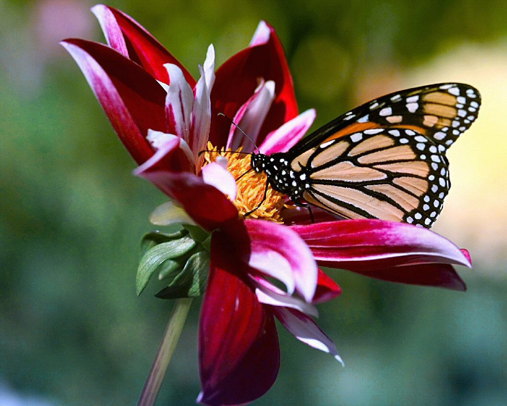

Je suis un grand voyageur
Les vidéos vous permettent de faire passer votre message de façon convaincante. Quand vous cliquez sur Vidéo en ligne, vous pouvez coller le code incorporé de la vidéo que vous souhaitez ajouter. Vous pouvez également taper un mot-clé pour rechercher en ligne la vidéo qui convient le mieux à votre document.Pour donner un aspect professionnel à votre document, Word offre des Les thèmes et les styles vous permettent également de structurer votre document. Quand vous cliquez sur Création et sélectionnez un nouveau thème, les images, graphiques et SmartArt sont modifiés pour correspondre au nouveau thème choisi. Quand vous appliquez des styles, les titres changent pour refléter le nouveau thème.
Les vidéos vous permettent de faire passer votre message de façon convaincante. Quand vous cliquez sur Vidéo en ligne, vous pouvez coller le code incorporé de la vidéo que vous souhaitez ajouter. Vous pouvez également taper un mot-clé pour rechercher en ligne la vidéo qui convient le mieux à votre document.Pour donner un aspect professionnel à votre document, Word offre des Les thèmes et les styles vous permettent également de structurer votre document. Quand vous cliquez sur Création et sélectionnez un nouveau thème, les images, graphiques et SmartArt sont modifiés pour correspondre au nouveau thème choisi. Quand vous appliquez des styles, les titres changent pour refléter le nouveau thème
Les vidéos vous permettent de faire passer votre message de façon convaincante. Quand vous cliquez sur Vidéo en ligne, vous pouvez coller le code incorporé de la vidéo que vous souhaitez ajouter. Vous pouvez également taper un mot-clé pour rechercher en ligne la vidéo qui convient le mieux à votre document.Pour donner un aspect professionnel à votre document, Word offre des Les thèmes et les styles vous permettent également de structurer votre document. Quand vous cliquez sur Création et sélectionnez un nouveau thème, les images, graphiques et SmartArt sont modifiés pour correspondre au nouveau thème choisi. Quand vous appliquez des styles, les titres changent pour refléter le nouveau thème